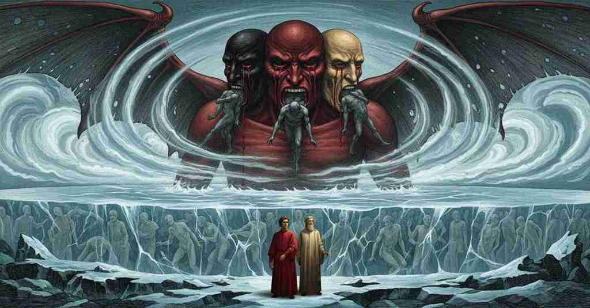
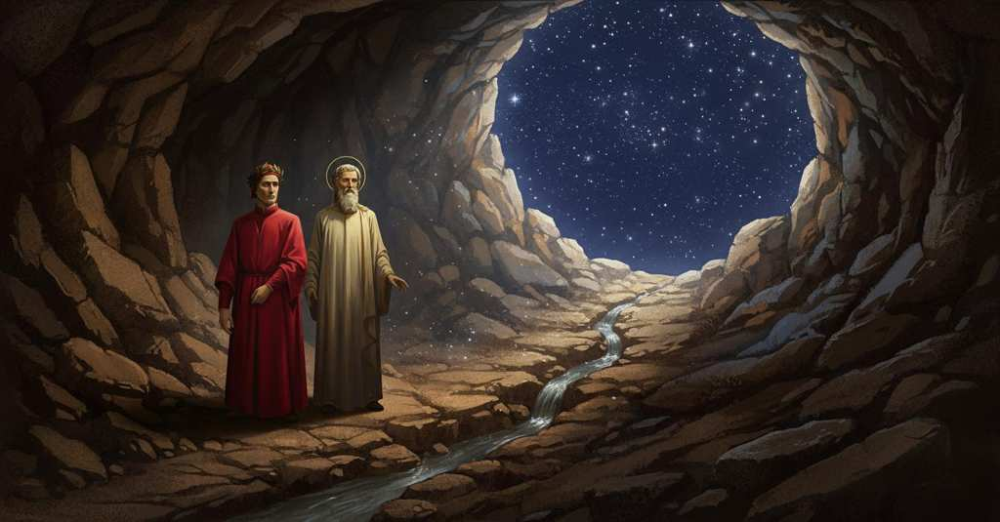

Inferno — Canto 34

After witnessing the monstrous, three-faced Lucifer, Virgil carries Dante down the giant's body, passing the earth's center to climb out of Hell and emerge at last to see the stars. 地獄の王ルチフェルに遭遇した語り手は、ウェルギリウスに導かれてその体を下り、地球の中心を越えて再び地上へと脱出した。
1
«Vexilla regis prodeunt inferni
«The banners of the king of Hell advance
「『地獄の王の御旗が進み来る』
2
verso di noi; però dinanzi mira»,
toward us; therefore look ahead»,
我らに向かって。ゆえに前方を見よ」
3
disse ’l maestro mio, «se tu ’l discerni».
said my master, «if you can discern him».
と師は言った、「もしそなたに見分けられれば」。
4
Come quando una grossa nebbia spira,
As when a thick fog breathes,
濃い霧が立ち込める時、
5
o quando l’emisperio nostro annotta,
or when our hemisphere grows dark at night,
あるいは我らの半球が夜に沈む時、
6
par di lungi un molin che ’l vento gira,
a windmill that the wind turns seems from afar,
遠くに風で回る風車が見えるように、
7
veder mi parve un tal dificio allotta;
such a structure I seemed to see then;
その時、私にはそのような建造物が見えたようだった。
8
poi per lo vento mi ristrinsi retro
then because of the wind I drew back behind
それから風のために私は後ろに身を縮めた、
9
al duca mio, ché non lì era altra grotta.
my guide, for there was no other shelter.
我が導き手の。そこには他に身を寄せる場所はなかったからだ。
10
Già era, e con paura il metto in metro,
I was now, and with fear I put it into meter,
私はすでに来ていた、そして恐怖と共にこれを詩句に記すが、
11
là dove l’ombre tutte eran coperte,
there where the shades were all covered,
そこでは亡者たちが皆ことごとく覆われ、
12
e trasparien come festuca in vetro.
and showed through like a straw in glass.
ガラスの中の藁のように透けて見えていた。
13
Altre sono a giacere; altre stanno erte,
Some are lying down; others stand erect,
ある者は横たわり、ある者はまっすぐに立ち、
14
quella col capo e quella con le piante;
this one with its head and that one with its soles;
ある者は頭を、ある者は足の裏を上にして、
15
altra, com’ arco, il volto a’ piè rinverte.
another, like a bow, bends its face back to its feet.
ある者は、弓のように、顔を足元へと折り曲げている。
16
Quando noi fummo fatti tanto avante,
When we had advanced so far forward,
我らがそれほどまで前に進み、
17
ch’al mio maestro piacque di mostrarmi
that it pleased my master to show me
我が師が私に見せるのをよしとした時、
18
la creatura ch’ebbe il bel sembiante,
the creature that once had the beautiful semblance,
かつて美しき相貌を持っていたその被造物を、
19
d’innanzi mi si tolse e fé restarmi,
he took himself from before me and made me stop,
私の前から身を退いて、私を立ち止まらせ、
20
«Ecco Dite», dicendo, «ed ecco il loco
«Behold Dis,» saying, «and behold the place
「見よ、ディーテだ」と言い、「そしてここがその場所だ、
21
ove convien che di fortezza t’armi».
where you must arm yourself with fortitude».
そなたが剛勇で身を固めるべき場所が」。
22
Com’ io divenni allor gelato e fioco,
How I then became frozen and faint,
その時、私がいかに凍りつき、か弱くなったか、
23
nol dimandar, lettor, ch’i’ non lo scrivo,
do not ask, reader, for I do not write it,
それを問うな、読者よ、私はそれを書かないからだ、
24
però ch’ogne parlar sarebbe poco.
because all speech would be too little.
なぜなら、いかなる言葉も及ばぬだろうから。
25
Io non mori’ e non rimasi vivo;
I did not die and I did not remain alive;
私は死にもせず、生きてもいなかった。
26
pensa oggimai per te, s’hai fior d’ingegno,
think now for yourself, if you have a grain of wit,
今や自ら考えるがよい、もしそなたに才知のひとかけらでもあるなら、
27
qual io divenni, d’uno e d’altro privo.
what I became, deprived of both the one and the other.
私がどうなったかを、そのどちらをも奪われて。
28
Lo ’mperador del doloroso regno
The emperor of the sorrowful kingdom
悲しみの王国の皇帝は
29
da mezzo ’l petto uscia fuor de la ghiaccia;
from mid-chest emerged from the ice;
胸の半ばから氷の外に出ていた。
30
e più con un gigante io mi convegno,
and I am more in proportion with a giant
そして私は巨人との方が釣り合いがとれるほどで、
31
che i giganti non fan con le sue braccia:
than giants are with his arms:
巨人たちと彼（皇帝）の腕とは釣り合わない。
32
vedi oggimai quant’ esser dee quel tutto
see now how great that whole must be
今や見よ、その全体がいかに巨大でなければならないかを、
33
ch’a così fatta parte si confaccia.
that corresponds to such a part.
このような部分と釣り合うためには。
34
S’el fu sì bel com’ elli è ora brutto,
If he was as beautiful as he is now ugly,
もし彼が今醜いようにかつて美しく、
35
e contra ’l suo fattore alzò le ciglia,
and against his maker raised his brows,
そして自らの創り主に対し眉を上げたのなら、
36
ben dee da lui procedere ogne lutto.
truly from him must all sorrow proceed.
まさしく彼からあらゆる嘆きが生じるはずだ。
37
Oh quanto parve a me gran maraviglia
Oh how great a marvel it appeared to me
おお、私にはどれほどの大いなる驚異に見えたことか、
38
quand’ io vidi tre facce a la sua testa!
when I saw three faces on his head!
私がその頭に三つの顔を見た時には！
39
L’una dinanzi, e quella era vermiglia;
The one in front, and it was vermilion;
一つは正面にあり、そしてそれは朱色だった。
40
l’altr’ eran due, che s’aggiugnieno a questa
the others were two, which joined this one
他の二つは、これに加わるように、
41
sovresso ’l mezzo di ciascuna spalla,
above the middle of each shoulder,
それぞれの肩の中ほどの上にあった。
42
e sé giugnieno al loco de la cresta:
and they joined at the place of the crest:
そしてそれらは頂（いただき）の場所で一つになっていた。
43
e la destra parea tra bianca e gialla;
and the right one seemed between white and yellow;
そして右の顔は白と黄色の間に見えた。
44
la sinistra a vedere era tal, quali
the left one to see was of the kind
左の顔は見るからに、そのようなものだった、
45
vegnon di là onde ’l Nilo s’avvalla.
of those who come from where the Nile descends.
ナイル川が下る彼方から来る者たちのような。
46
Sotto ciascuna uscivan due grand’ ali,
Beneath each, two great wings came forth,
それぞれの顔の下から二枚の巨大な翼が生え出て、
47
quanto si convenia a tanto uccello:
as was fitting for so great a bird:
それほど巨大な鳥にふさわしい大きさだった。
48
vele di mar non vid’ io mai cotali.
sails of the sea I never saw so great.
海の帆でも私はこれほど大きいものを見たことはない。
49
Non avean penne, ma di vispistrello
They had no feathers, but of a bat
それらに羽毛はなく、しかしコウモリの
50
era lor modo; e quelle svolazzava,
was their form; and he was flapping them,
様式だった。そしてそれを羽ばたかせ、
51
sì che tre venti si movean da ello:
so that three winds moved out from him:
そのために三つの風が彼から動いていた。
52
quindi Cocito tutto s’aggelava.
from this all of Cocytus was frozen.
それゆえにコキュートスはすべて凍りついていた。
53
Con sei occhi piangëa, e per tre menti
With six eyes he was weeping, and down three chins
六つの目で彼は泣き、そして三つの顎を伝って
54
gocciava ’l pianto e sanguinosa bava.
dripped the tears and bloody slobber.
涙と血の混じった涎を滴らせていた。
55
Da ogne bocca dirompea co’ denti
From each mouth he was tearing with his teeth
それぞれの口から歯で砕いていた、
56
un peccatore, a guisa di maciulla,
a sinner, in the manner of a heckle,
一人の罪人を、亜麻打ち機のように。
57
sì che tre ne facea così dolenti.
so that he made three of them suffer so.
そうして三人をそのように苦しめていた。
58
A quel dinanzi il mordere era nulla
To the one in front the biting was nothing
正面の者にとっては噛まれることは何でもなく、
59
verso ’l graffiar, che talvolta la schiena
compared to the scratching, for at times his back
掻きむしられることに比べれば。時として背中は
60
rimanea de la pelle tutta brulla.
remained completely stripped of skin.
皮膚がすっかり剥がれたままになっていた。
61
«Quell’ anima là sù c’ha maggior pena»,
“That soul up there who has the greatest pain,”
「あそこの上で最も重い罰を受けている魂は」
62
disse ’l maestro, «è Giuda Scarïotto,
said the master, “is Judas Iscariot,
と師は言った、「ユダ・イスカリオテだ、
63
che ’l capo ha dentro e fuor le gambe mena.
who has his head inside, and plies his legs without.
頭を内に入れ、脚を外で動かしている。
64
De li altri due c’hanno il capo di sotto,
Of the other two who have their heads below,
頭を下に向けている他の二人のうち、
65
quel che pende dal nero ceffo è Bruto:
the one who hangs from the black maw is Brutus:
黒い顔から垂れ下がっているのがブルータスだ。
66
vedi come si storce, e non fa motto!;
see how he writhes, and utters not a word!;
見よ、いかに身をよじり、そして一言も発しないかを！
67
e l’altro è Cassio, che par sì membruto.
and the other is Cassius, who seems so large-limbed.
そしてもう一人はカッシウス、あれほど頑強に見える者だ。
68
Ma la notte risurge, e oramai
«But the night is rising again, and now
「だが夜は再び昇り、もはや
69
è da partir, ché tutto avem veduto».
it is time to depart, for we have seen all».
出発の時だ、我らはすべてを見たのだから」。
70
Com’ a lui piacque, il collo li avvinghiai;
As it pleased him, I clasped his neck;
師が望むままに、私はその首に抱きついた。
71
ed el prese di tempo e loco poste,
and he seized the opportune time and place,
そして師は時と場所を見計らい、
72
e quando l’ali fuoro aperte assai,
and when the wings were opened wide enough,
翼が十分に開かれた時、
73
appigliò sé a le vellute coste;
he grappled himself to the hairy flanks;
毛深い脇腹にしがみついた。
74
di vello in vello giù discese poscia
from shag to shag he then descended down
毛房から毛房へと、その後下りていった
75
tra ’l folto pelo e le gelate croste.
between the thick fur and the frozen crusts.
濃い体毛と凍てついた皮殻の間を。
76
Quando noi fummo là dove la coscia
When we were there where the thigh
我らが腿が
77
si volge, a punto in sul grosso de l’anche,
turns, just at the thick of the haunch,
曲がる場所に、まさに腰の厚みの上に差しかかった時、
78
lo duca, con fatica e con angoscia,
the leader, with labor and with anguish,
導き手は、苦労と苦悩をもって、
79
volse la testa ov’ elli avea le zanche,
turned his head where he had had his shanks,
頭を、彼が脛を持っていた方へと向け、
80
e aggrappossi al pel com’ om che sale,
and grappled the hair like a man who climbs,
そして登る人のように毛に掴まった、
81
sì che ’n inferno i’ credea tornar anche.
so that I thought I was returning into Hell again.
そのため私は地獄へまた戻るのかと思った。
82
«Attienti ben, ché per cotali scale»,
«Hold on fast, for by such stairs»,
「しっかり掴まれ、なぜならこのような階段によって」、
83
disse ’l maestro, ansando com’ uom lasso,
said the master, panting like a weary man,
師は、疲れた人のように息を切らしながら言った、
84
«conviensi dipartir da tanto male».
«must one depart from so much evil».
「これほどの大いなる悪から離れるのだから」。
85
Poi uscì fuor per lo fóro d’un sasso
Then he came out through the opening of a rock
その後、岩の穴から外へ出て
86
e puose me in su l’orlo a sedere;
and placed me on its edge to sit;
私をその縁に座らせた。
87
appresso porse a me l’accorto passo.
next he directed his skillful step toward me.
続いて彼は、慎重な足取りで私のもとへ来た。
88
Io levai li occhi e credetti vedere
I raised my eyes and thought I would see
私は目を上げ、見たと思った
89
Lucifero com’ io l’avea lasciato,
Lucifer as I had left him,
ルチフェルを、私が彼から離れた時のように、
90
e vidili le gambe in sù tenere;
and I saw him holding his legs upward;
そして彼の脚が上を向いているのを見た。
91
e s’io divenni allora travagliato,
and if I then became bewildered,
そしてその時私がどれほど狼狽したか、
92
la gente grossa il pensi, che non vede
let the dull people ponder it, who do not see
鈍感な人々は想像するがよい、彼らは見抜けないのだ
93
qual è quel punto ch’io avea passato.
what that point is which I had passed.
私が通過したその点が、どのような点であるかを。
94
«Lèvati sù», disse ’l maestro, «in piede:
«Get up,» said the master, «on your feet:
「立て、」と師は言った、「立ち上がれ。
95
la via è lunga e ’l cammino è malvagio,
the way is long and the path is evil,
道は長く、路は険しい、
96
e già il sole a mezza terza riede».
and already the sun returns to mid-terce.»
そして太陽はもう第三時の中ほどに戻っている」。
97
Non era camminata di palagio
It was no palace passageway
それは宮殿の歩廊ではなかった
98
là ’v’ eravam, ma natural burella
where we were, but a natural dungeon
我らがいた場所は、だが天然の洞穴で
99
ch’avea mal suolo e di lume disagio.
that had a bad floor and a lack of light.
足場は悪く、光も乏しかった。
100
«Prima ch’io de l’abisso mi divella,
«Before I tear myself from the abyss,
「私がこの深淵から身を引き離す前に、
101
maestro mio», diss’ io quando fui dritto,
my master,» I said when I was upright,
我が師よ」と私は立ち上がると言った、
102
«a trarmi d’erro un poco mi favella:
«speak to me a little to draw me from error:
「私の迷いを解くために少しお話しください。
103
ov’ è la ghiaccia? e questi com’ è fitto
where is the ice? and this one, how is he fixed
氷はどこですか？そしてこの者はなぜ
104
sì sottosopra? e come, in sì poc’ ora,
so upside-down? and how, in so little time,
このように逆さまなのですか？そして、どうして、これほど短時間に、
105
da sera a mane ha fatto il sol tragitto?».
has the sun made the journey from evening to morning?».
太陽は夕べから朝への旅を終えたのですか？」。
106
Ed elli a me: «Tu imagini ancora
And he to me: «You imagine you are still
すると彼は私に言った、「お前はまだ想像している
107
d’esser di là dal centro, ov’ io mi presi
on the other side of the center, where I took hold
地球の中心の向こう側にいると、私が掴まった
108
al pel del vermo reo che ’l mondo fóra.
of the hair of the guilty worm who pierces the world.
世界を貫く罪深き蛆虫の毛に。
109
Di là fosti cotanto quant’ io scesi;
You were on that side for as long as I descended;
私が下りている間、お前は向こう側にいた。
110
quand’ io mi volsi, tu passasti ’l punto
when I turned, you passed the point
私が身を翻した時、お前は点を通過したのだ
111
al qual si traggon d’ogne parte i pesi.
to which all weights from every part are drawn.
あらゆる場所から重さが引かれる点を。
112
E se’ or sotto l’emisperio giunto
And you are now arrived beneath the hemisphere
そして今お前は半球の下に着いた
113
ch’è contraposto a quel che la gran secca
that is opposite to the one that the great dry land
それはかの大いなる乾いた地を覆う半球と
114
coverchia, e sotto ’l cui colmo consunto
covers, and under whose summit was consumed
対をなし、その頂点の下で消耗させられたのは
115
fu l’uom che nacque e visse sanza pecca;
the man who was born and lived without sin;
罪なく生まれ、罪なく生きた人であった。
116
tu haï i piedi in su picciola spera
you have your feet on a small sphere
お前の足は小さな球の上にある
117
che l’altra faccia fa de la Giudecca.
that makes the other face of the Judecca.
それはジュデッカの裏側をなしている。
118
Qui è da man, quando di là è sera;
Here it is morning, when there it is evening;
向こうが夕べの時、こちらは朝だ。
119
e questi, che ne fé scala col pelo,
and this one, who made a ladder for us with his hair,
そしてこの者は、我らにその毛で梯子を作ったが、
120
fitto è ancora sì come prim’ era.
is fixed still just as he was before.
先ほどと同じように突き刺さったままだ。
121
Da questa parte cadde giù dal cielo;
On this side he fell down from heaven;
こちら側に彼は天から落ちてきた。
122
e la terra, che pria di qua si sporse,
and the land, which before spread out on this side,
そして大地は、以前はこちら側に張り出していたが、
123
per paura di lui fé del mar velo,
for fear of him made a veil of the sea,
彼を恐れて、海をヴェールとした、
124
e venne a l’emisperio nostro; e forse
and came to our hemisphere; and perhaps
そして我らの半球へと来た。そしておそらく
125
per fuggir lui lasciò qui loco vòto
to flee from him, it left this empty place here,
彼から逃れるためにここに空虚な場所を残し
126
quella ch’appar di qua, e sù ricorse».
that which appears on this side, and rushed upward.»
こちら側に見えるものが、上へと駆け上がったのだ」。
127
Luogo è là giù da Belzebù remoto
There is a place down there, remote from Beelzebub
そこはベルゼブブから離れた地下の場所で
128
tanto quanto la tomba si distende,
as far as his tomb extends,
その墓穴が広がるのと同じだけの距離にあり、
129
che non per vista, ma per suono è noto
which is known not by sight, but by the sound
それは視覚によってではなく、音によって知られる
130
d’un ruscelletto che quivi discende
of a little stream that descends there
そこを下る一本の小川の音によって、
131
per la buca d’un sasso, ch’elli ha roso,
through the hollow of a rock, which it has eroded,
それが侵食した岩の穴を通り、
132
col corso ch’elli avvolge, e poco pende.
with the course that it winds, and slopes but little.
それが巡る流れとともに、緩やかに傾斜している。
133
Lo duca e io per quel cammino ascoso
My leader and I, by that hidden way,
導き手と私はその隠れた道を通って
134
intrammo a ritornar nel chiaro mondo;
entered to return into the bright world;
明るい世界へと戻るために入って行った。
135
e sanza cura aver d’alcun riposo,
and without any care of taking any rest,
そしていかなる休息も気にすることなく、
136
salimmo sù, el primo e io secondo,
we climbed up, he first and I second,
我らは登った、彼が先に、私が後に続き、
137
tanto ch’i’ vidi de le cose belle
so far that I saw some of the beautiful things
ついに私は美しいものどもを見た
138
che porta ’l ciel, per un pertugio tondo.
that heaven bears, through a round opening.
天が運ぶものを、一つの丸い穴を通して。
139
E quindi uscimmo a riveder le stelle.
And thence we came forth to see again the stars.
そしてそこから我らは出て、再び星々を見た。
